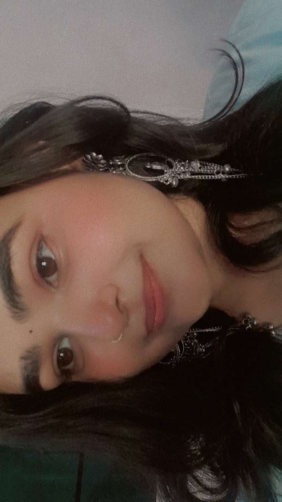
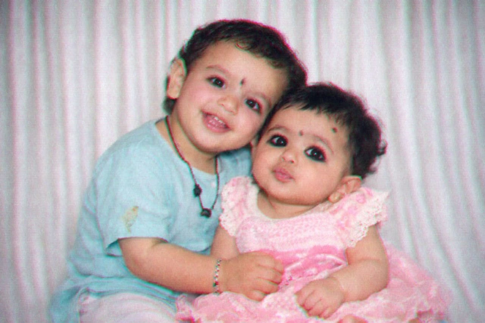
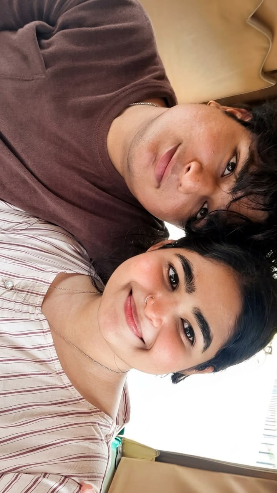
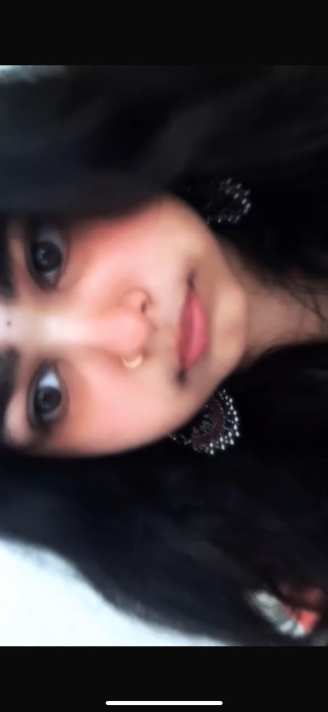
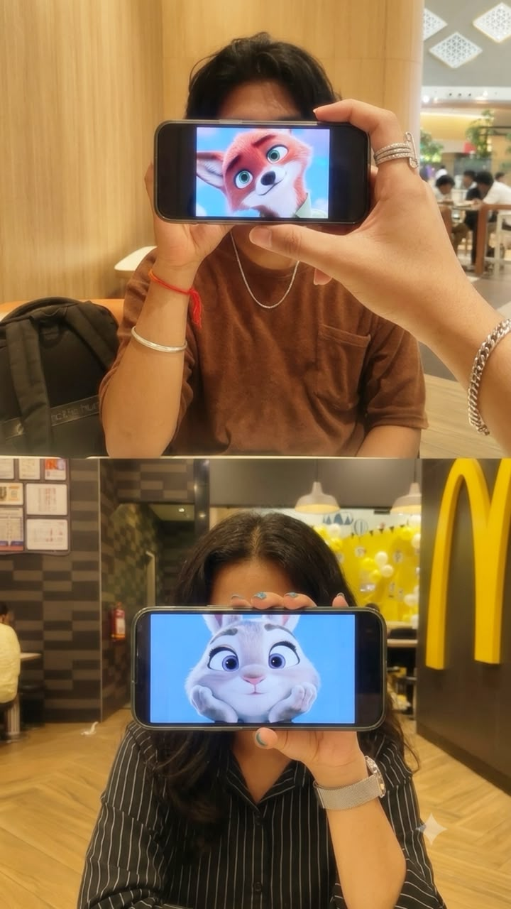
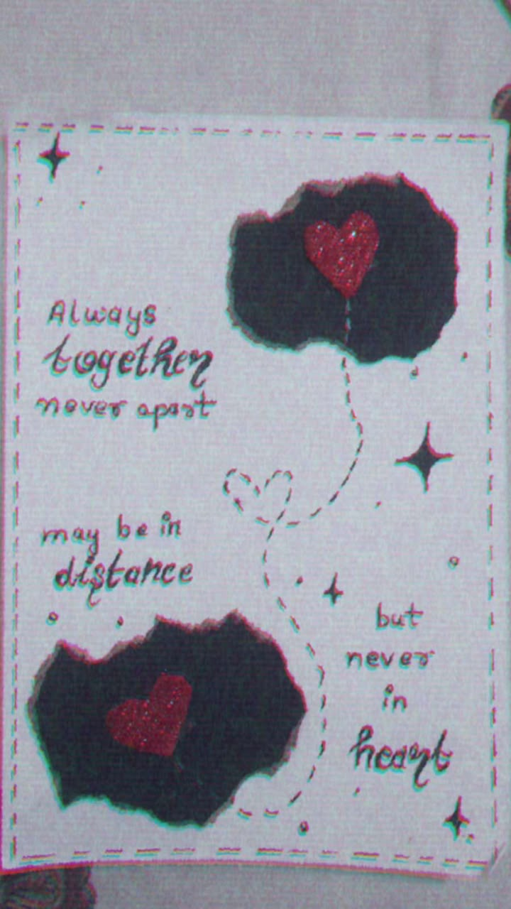
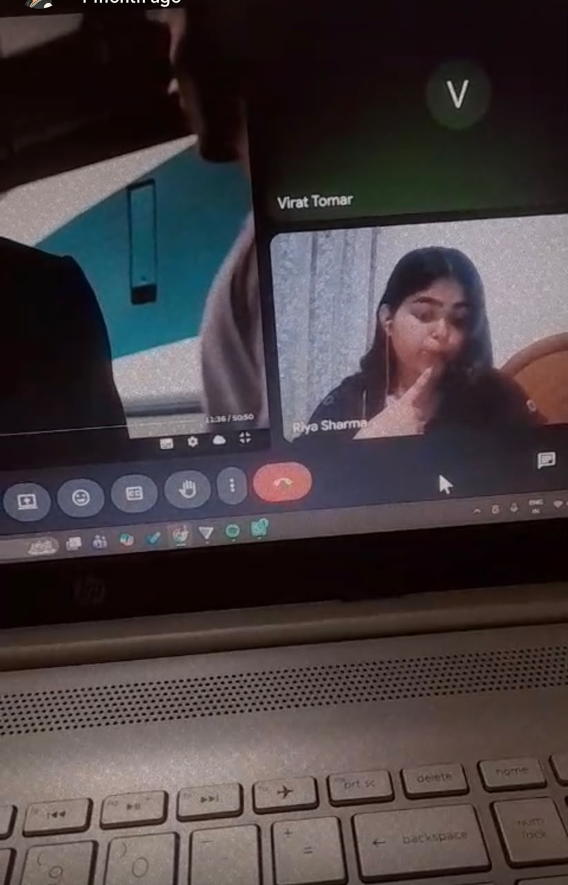
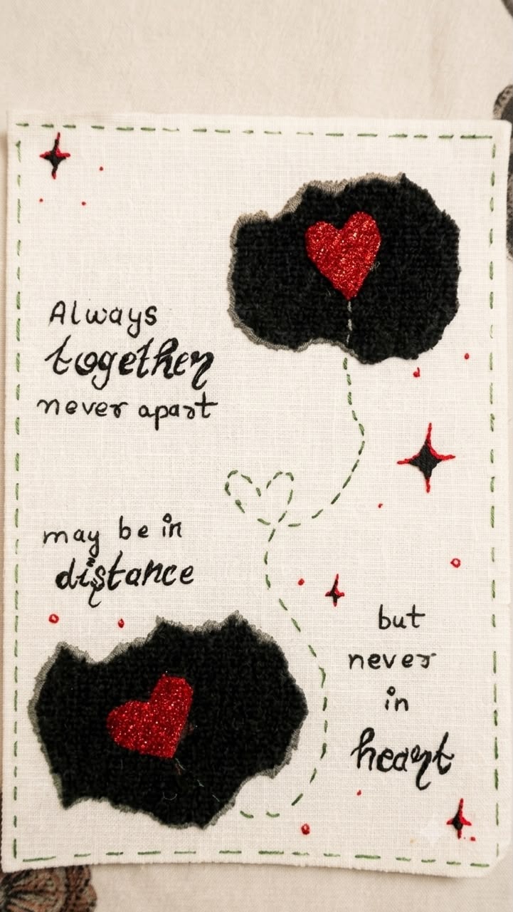
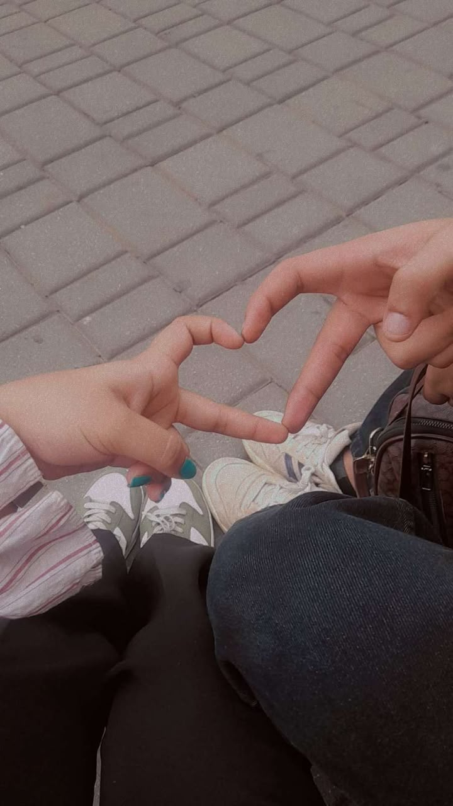
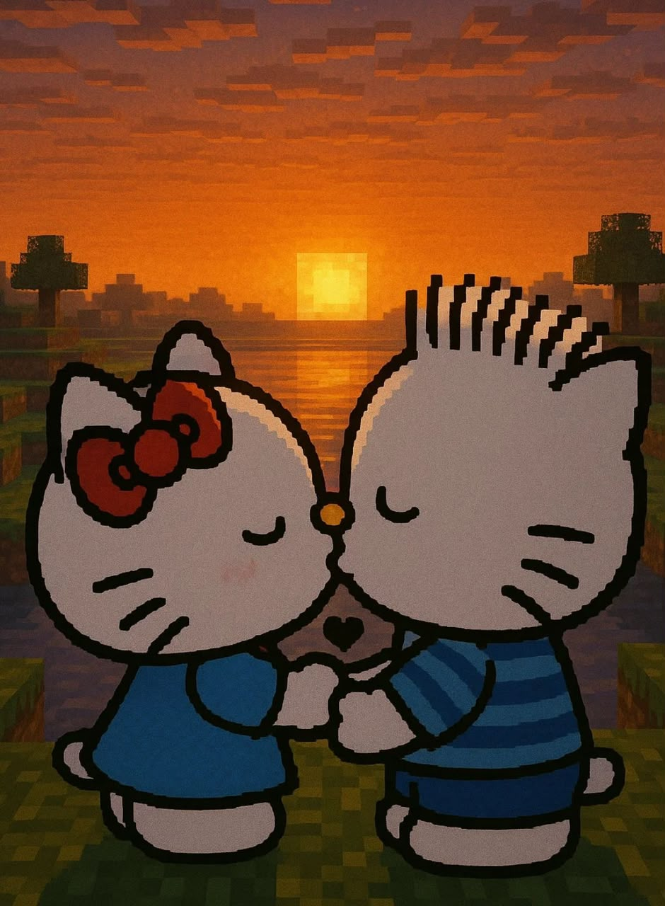

to the best person I know
follow the trail — there's a note pinned to each one

memory 01
pin 01
Your smile has this quiet magic that can make even my hardest days feel lighter. Whenever I look at this photo, I'm reminded that happiness isn't a place it's simply being with you, even if it's just through a memory

memory 02
pin 02
Two little hearts, living completely different stories, with no idea that one day fate would bring them together. Back then, we were just innocent kids chasing little dreams, never knowing that years later we'd become a beautiful chapter in each other's lives. Looking at this photo reminds me that some people are written into our story long before we ever meet them, and I'm so grateful that life eventually led me to you. ❤️

memory 03
pin 03
I don't know what the future has planned for us, but I know one thing for sure—every moment spent with you has become one of my favorite chapters. This picture is proof that some memories deserve to last forever.

memory 04
pin 04
Whenever I miss you, I don't just look at your photos—I relive every laugh, every conversation, and every little moment that made me smile. Distance may separate us sometimes, but memories like this always bring you close to my heart.

memory 05
pin 05
u smile, the way you laugh, and the way you simply exist makes my world brighter. This picture is one of the many reasons I'm thankful for you every sYou don't have to try to be special because you already are. The way yoingle day.

memory 06
pin 06
Some memories slowly fade away, but this is one I never want to forget. Every time I see this picture, it reminds me how beautiful life can feel when it's shared with someone who means so much to you

memory 07
pin 07
Not the beginning, not recent — just one of those in-between moments that quietly became a favorite.

memory 08
pin 08
I hope years from now we look back at this photo and smile, remembering not just how we looked, but how deeply we cared for each other. Some moments are temporary, but the emotions they leave behind can last forever

memory 09
pin 09
If I had to choose one thing to thank life for, it would be bringing you into my world. These photos are more than memories—they're little pieces of my heart. No matter what happens, you'll always be one of the most beautiful chapters of my life

memory 10
pin 10
The trail doesn't end at ten — it's just where the page runs out. There's a lot more to pin up, together, soon.
However far the map says we are, you're the first door I open in my head every single day. Here's to closing that distance, one visit — and one silly page like this — at a time.
— always yours